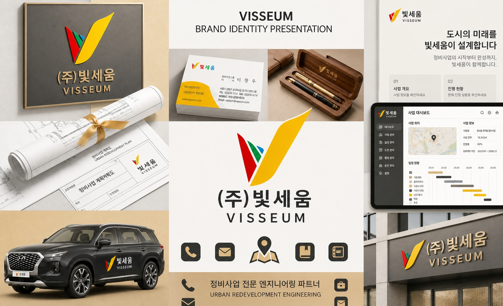
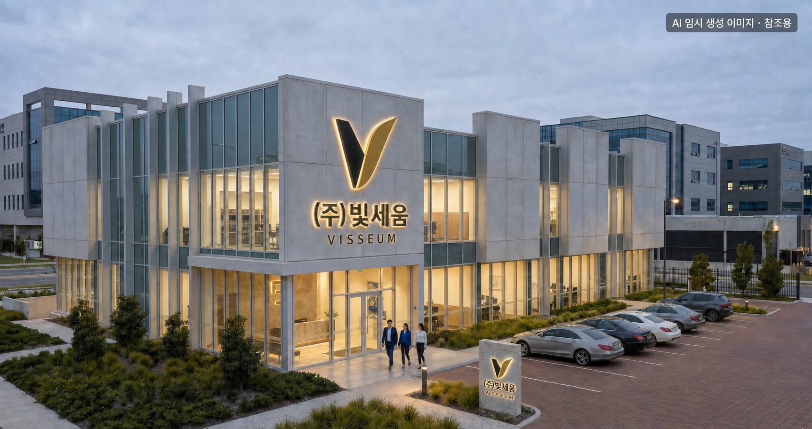

정비사업의 기준을 바로 세우고, 사업의 가치를 끝까지 완성하는 빛세움의 길
고객의 자산을 빛나는 결실로 세우고, 흐트러진 절차를 바로 세우고,
도시와 사람을 아름답게 조화시켜 삶의 질을 높이는 것.
그것이 빛세움이 걸어가는 길입니다.
쉬운 길이 아니라 옳은 길을 택했고,
그 선택이 빛세움의 정체성이 되었습니다.
도시정비사업은 단순한 건설 행위가 아닙니다. 수십 년간 삶의 터전이었던 공간을 허물고, 그 위에 새로운 공동체를 세우는 일입니다.
수백, 수천 명의 재산권이 걸려 있고, 행정기관의 인허가와 법률적 판단이 매 단계마다 뒤따릅니다. 하나의 절차가 어긋나면 수년간의 노력이 무너질 수 있는, 가장 엄밀함을 요구하는 분야입니다.
우리가 도시정비에 집중하는 이유는 명확합니다. 이 분야야말로 전문가의 양심과 역량이 가장 절실하게 필요한 영역이기 때문입니다.
전문가의 양심이 필요한 분야에서, 기준을 세우는 회사가 되겠습니다.
조합원·시행사·시공사·행정기관 사이의 균형점을 찾아냅니다
도시정비법을 비롯한 관련 법령에 기반한 정확한 절차 이행
경제적 타당성과 공익적 가치를 동시에 실현하는 설계
보고서 위의 전략이 아닌, 현장에서 결과를 만들어내는 역량
조합(원)을 향한 능동적 선도 경영 · 조합(원)을 위한 믿음과 신뢰 경영
합리적 주민의견 수렴 · 신속한 동의서 징구 완료 · 예상 문제점 사전대응 · 공정/투명 사업관리
사업의 이익 극대화를 위한 가치 경영 · 부가가치 창출을 위한 전문가그룹 관리
사업지 특성에 맞는 관리처분계획 · 철저한 사업관리로 사업기간 단축 · 사업경비 절감으로 분담금 최소화 · 조합원의 권리와 재산을 지키는 컨설팅
법령과 지침에 근거한 정확한 절차를 준수합니다. 모든 의사결정은 법적 기반 위에서 이루어집니다.
모든 공문서·보고서·의사록을 엄밀하게 작성합니다. 기록의 정확성이 곧 사업의 신뢰입니다.
어느 한쪽에 치우치지 않는 중립적 관점으로 최선의 합의점을 도출합니다.
계획에서 그치지 않고 현장에서 결과를 만들어냅니다. 실제 인허가 취득과 사업 진행으로 증명합니다.
맡은 사업장에 대해 끝까지 책임집니다. 어떤 난관에서도 해법을 찾아냅니다.
조합 운영의 모든 과정을 투명하게 공개하고, 신뢰를 기반으로 소통합니다.

